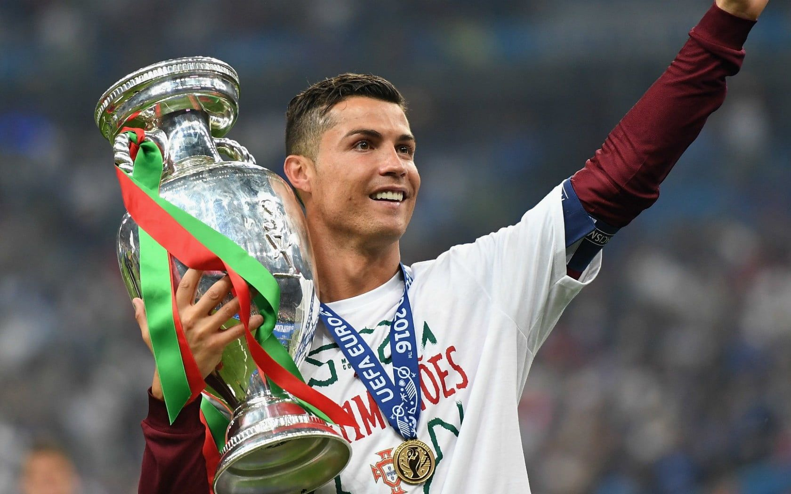
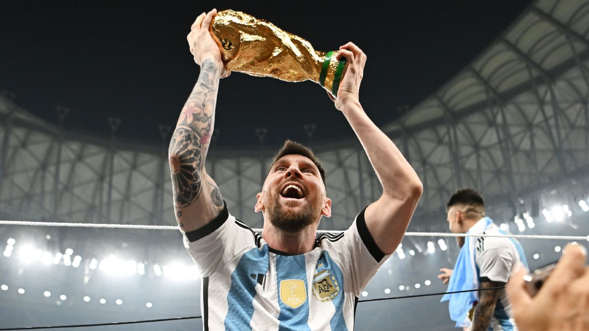
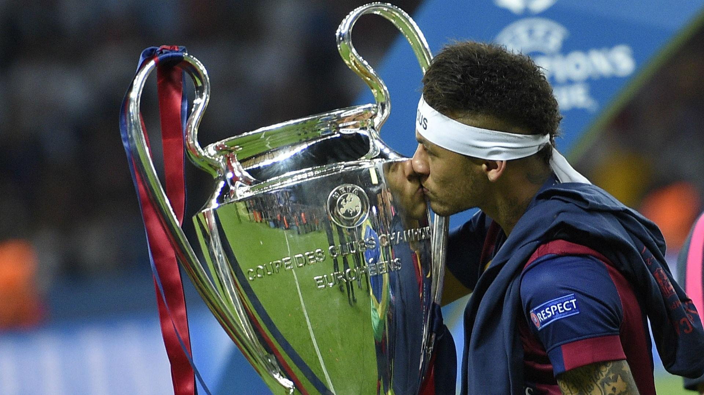

My favourite players of all time.
1-cristiano ronaldo
Cristiano Ronaldo's work ethic is legendary.
His relentless pursuit of perfection is seen in his rigorous training regimen and his
commitment to maintaining peak physical condition,and that is why i putted him in the tob of the list.
He has won 33 trophies in his career, including:
- seven league titles
- 5 UCL
- the UEFA European Championship
- the UEFA Nations League.

why cristiano ronaldo is the best ever?
2-lionel messi
Lionel Messi has been named the world’s best men’s player of the year eight times
In 2022 he helped Argentina win the World Cup. Naturally left-footed, quick, and precise in control
of the ball, Messi is known as a keen pass distributor and can readily thread his way through packed defenses.
and here’s Messi's best achievements:
- the world’S cup
- 4 UCL
- the most official recorded assists in football history (374).

"messi is built diffrent"
3-neymar jr
Regarded as one of the greatest players of his generation, he is known for his flamboyant style of play, passing abilities, and two-footedness.
Neymar has scored at least 100 goals for three different clubs, being one of a few
players to do so, and is the highest-scoring Brazilian player in Champions League history.

"the prince who never became a king"